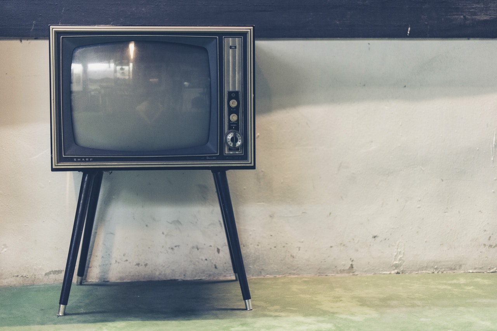
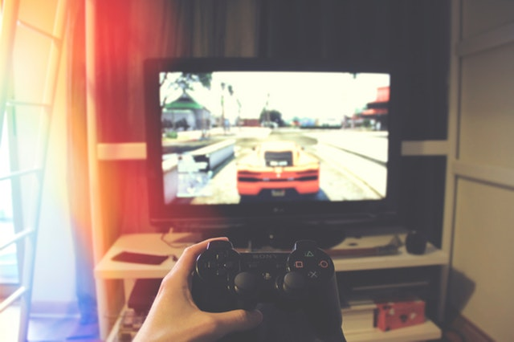

The TV was invented in the 19th century and during the end of the 19th century and the entirety of the 20th the TV was heavily contemporized to what now is known as the flatscreen-TV. For example colour tv wasn't common until the '70's. Digital TV can be traced to the 1950's but wasn't fully transitioned until around the year of 2010.
Streaming is first mentioned during the 1920's with a patent from George O. Squier, that was however not like streaming today. Todays streaming started to develop during the 1980's-1990's. Famous streaming sites today started their streaming service in the 21st century when streaming really started to grow. Today there are over 100 million users on different streaming sites. And every year, the amount of hours on streamed videos and such are up in the billions.
